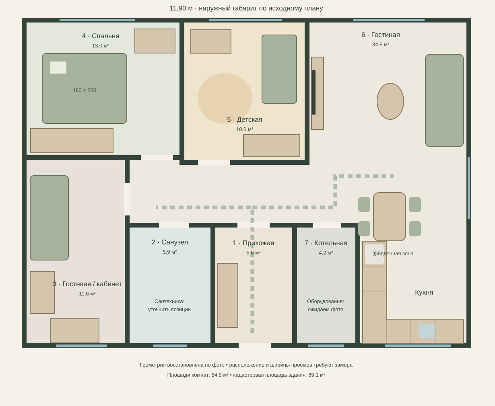
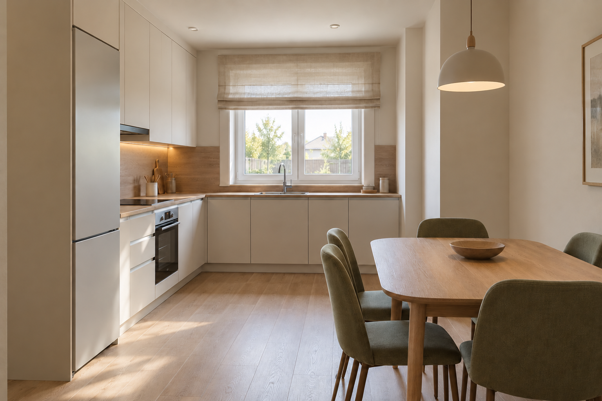
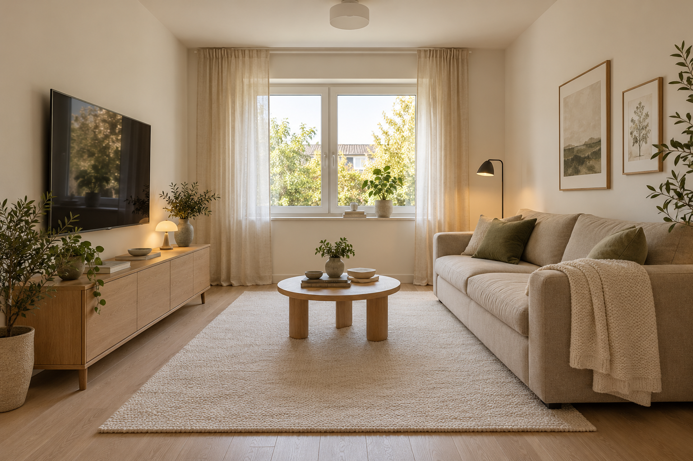
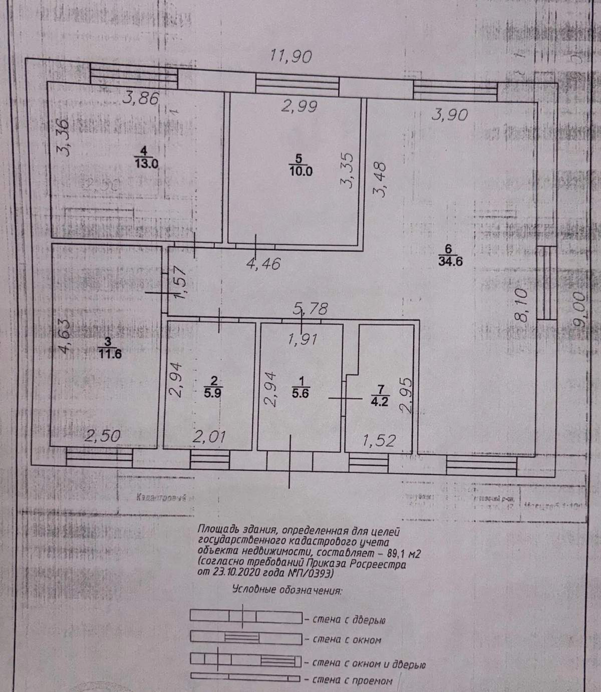
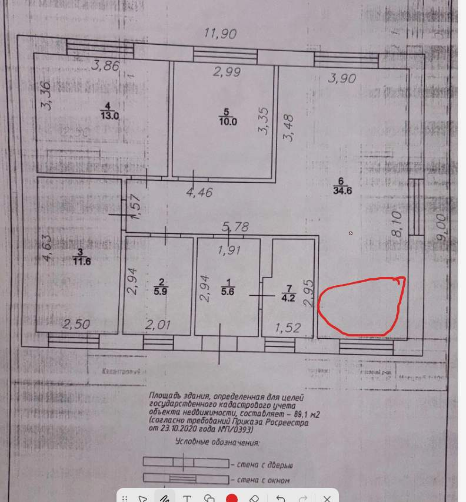

Ксюша и Руслан
Дом, где есть место и спокойствию, и детским открытиям.
План жизни.
Все перегородки сохраняются.

Пунктир — идея основного маршрута. Сантехника и оборудование котельной не расставлены: нужны фотографии. Открывание дверей и фасадов ещё не проверено.
Тепло. Свет. Тактильность.
Палитра материалов · не фотореалистичная визуализация
Молочный
Основные стеныСветлый дуб
Пол и мебельОливковый
Мягкие акцентыПесочный
ТекстильГлубокий зелёный
Небольшие деталиПростая отделка
Однотонные обои, ровные белые потолки, общий декор дерева в жилых комнатах. Меньше сложных узлов при самостоятельном ремонте.
Хранение без визуального шума
Закрытые шкафы, спокойные фасады, низкие секции для детских игрушек. Декор добавляется постепенно.
Несколько сценариев света
Общий свет, подсветка кухни и локальный вечерний свет. Точки определим по существующей разводке — переносы пока не назначены.
Кухня и гостиная.
Два отдельных концепта в одной палитре

Молочный, дуб и оливковый.
Угловой гарнитур, спокойные фасады, стол со скруглёнными углами. Столешницу под окном проверим по высоте подоконника; индукция — предварительное предложение.


Мягкое место для всей семьи.
Прямой диван, низкая тумба, округлый столик и тёплый текстиль. Финальные размеры и количество декора подберём после проверки проходов.

От красивой идеи к точной 3D-модели.
Геометрию уточним по обмерам
01 / Проверяем размеры
Стены, высоты, окна, двери, радиаторы, электрика и выводы коммуникаций.
02 / Собираем 3D
Сначала кухня-гостиная, затем спальня, детская и остальные помещения. Расстановка мебели — в реальных габаритах.
03 / Готовим реализацию
Согласованные ракурсы, развёртки, спецификации и закупочные ведомости.
Спальня родителей — тихое пространство.
13,0 м² · тёплый минимализм
Спокойная палитра
Молочный фон, светлый дуб, песочное изголовье, небольшие оливковые акценты. Простой белый потолок.
Мебель по размеру
Матрас 160 × 200 см, шкаф ориентировочно 180–220 × 60 см, компактные тумбы 35–40 см. Размеры корректируются после замеров.
Лимит — 100 000 ₽
Кровать 27 тыс., матрас 20 тыс., шкаф 32 тыс., тумбы и светильники 11 тыс., шторы и аксессуары 10 тыс. Пока без подтверждённых товарных цен.
Детская, которая растёт вместе с ребёнком.
10,0 м² · тёплый минимализм
Сон и игры
Низкая кровать 80 × 160 см (либо 90 × 200 см после проверки проходов), свободный центр комнаты и мягкий ковёр.
Хранение и творчество
Закрытый шкаф, низкие ящики, стол по росту. Высокую мебель закрепить к стене, учитывать безопасность штор и электрики.
Лимит — 65 000 ₽
Кровать 13 тыс., матрас 8 тыс., шкаф 20 тыс., ящики 8 тыс., стол 6 тыс., текстиль 7 тыс., резерв 3 тыс.
Кабинет и гостевая — одна комната, две роли.
11,6 м² · тёплый минимализм
Работа у окна
Стол ориентировочно 120 × 60 см, удобное кресло и отдельный локальный свет. Положение стола выбирается с учётом бликов.
Приём гостей
Раскладной диван шириной около 160–190 см; рекомендуемое спальное место около 140 × 200 см. Обязательно проверить проход при раскладывании.
Лимит мебели — 35 000 ₽
Диван 18 тыс., стол 5 тыс., кресло 4 тыс., хранение 6 тыс., лампа и мелочи 2 тыс. Цены магазинов ещё не подтверждены.
Прихожая: порядок с первого шага.
5,6 м² · молочный и светлый дуб
Закрытое хранение
Шкаф глубиной около 45–60 см с учётом положения плечиков и дверей; верхний ярус — под сезонные вещи.
Каждодневное удобство
Скамья-обувница 70–90 см, зеркало в полный рост, несколько крючков и место для ключей. Не перекрываем вход.
Лимит мебели — 35 000 ₽
Шкаф 20 тыс., скамья и обувница 6 тыс., зеркало 4 тыс., аксессуары 2 тыс., резерв 3 тыс. Это бюджетные ориентиры.
Санузел: свет, простота и практичность.
5,9 м² · тёплый минимализм
Тёплая и влагостойкая палитра
Матовые молочно-песочные поверхности, светлая плитка, немного дубовой фактуры. Проверяем гидроизоляцию мокрых зон и вентиляцию.
Удобство семьи
Влагостойкая тумба 60–80 см по обмерам, зеркало со светом, закрытые полки для бытовой химии вне доступа ребёнка. Сохраняем доступ к ревизиям.
Лимит — 75 000 ₽
55 тыс. отделка с гидроизоляцией + 20 тыс. мебель и зеркало. Это суммы из действующего бюджета, не новые расходы. Замена сантехники не включена.
Котельная: безопасность важнее декора.
4,2 м² · техническое помещение
Доступ и обслуживание
Оставляем свободные зоны обслуживания котла, арматуры и счётчиков, доступ к вентиляции, дымоходу и инженерным вводам.
Только допустимое хранение
Лёгкий органайзер возможен лишь вне сервисных и противопожарных зон после проверки оборудования. Исключаем хранение горючего рядом с ним.
Бюджет без удвоения
Новые суммы пока не добавляем: отделку и свет уточним по фактическим требованиям и распределим в рамках существующей сметы либо согласуем изменение.
Полный предварительный проект дома.
Расчётная геометрия · все семь помещений
Все помещения
Мебель, назначение, освещение и отделка для каждой из семи комнат.
Изменяемые размеры
Редактор геометрии и пересчёт ориентировочной площади, стен и объёма; экспорт данных в JSON.
Единый стиль
Тёплый минимализм, действующие визуальные концепции, общий бюджет и документы.
Бюджет без догадок.
Плановые лимиты, а не проверенная товарная смета. Двери, существующая сантехника и отопление исключены. Потолки требуют уточнения технологии и стоимости монтажа.
| Статья | Раздел | Лимит, ₽ | Ваш факт, ₽ |
|---|---|---|---|
| Итого по выбранному разделу | |||
Документы проекта.
Актуальная версия · 0.3



01 / Исходный план

02 / Место кухни, отмеченное владельцем
Что готово. Что дальше.
Семья, бюджет, ограничения
Зафиксированы помещения, высота потолков, состояние отделки и зона кухни.
Планировка и палитра
Назначение комнаты №3 и стилевое направление А утверждены; точное размещение мебели зависит от обмеров.
Фото и обмеры
Проёмы, подоконники, коммуникации, розетки, сантехника и оборудование котельной.
Кухня и гостиная
Два изображения для обсуждения стиля. Далее — спальня и детская, затем уточнение по фото и обмерам.
Рабочая документация
Развёртки, точные привязки, ведомости отделки, света и розеток. Пока не выпущены.
Товарная смета
Конкретные позиции, количество, цены поставщиков и проверка общего бюджета.